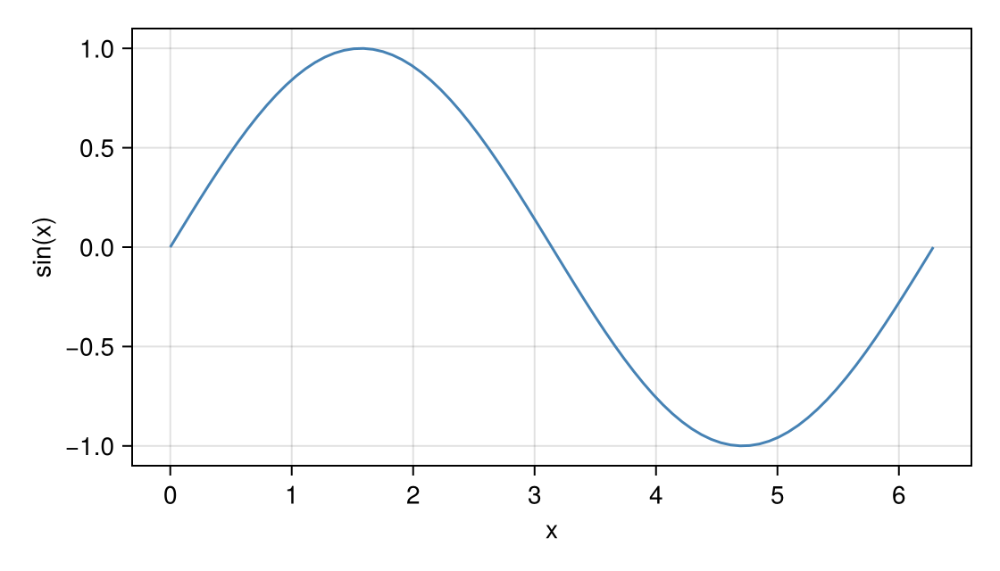

Read coordinates
Not every question is about a mark. Sometimes you want a value off the plot itself: the data coordinates under the pointer, the value a colour stands for, or a cutoff you set by dragging a line. This page covers the three interactables that turn a pointer position into a number. None of them is added by masque(fig) on its own except the colorbar, so pass them yourself.
Read (x, y) from the axis
AxisInteractable turns the whole plot area into a readout. Moving the pointer shows the data coordinates in a card that follows the cursor; clicking makes pick an AxisEvent with pick.x and pick.y:
Notebook as text
Move the pointer across the axis. The tooltip reads data (x, y) and follows the cursor.
Draw the line the way you already draw it, and add AxisInteractable on that axis. masque(fig) does not add this on its own.
begin
xs = range(0, 2π; length = 80)
fig = Figure(size = (560, 320))
ax = Axis(fig[1, 1]; xlabel = "x", ylabel = "sin(x)")
lines!(ax, xs, sin.(xs); color = :steelblue)
ints = AxisInteractable(ax)
nothing
end@bind pick is there for a click in your own notebook. A click stores pick.x and pick.y. This page keeps the readout on the figure, so the cell below does not re-run.
@bind pick masque(fig, ints)
Use it to mark a position — the start of a time window, a point to fit from — without needing a mark there. It works on linear and log axes, and on categorical ones. On a categorical axis the card shows the category under the pointer, and a click returns the category's position (Makie places categories at 1, 2, …, n) with its label in pick.xcat or pick.ycat; on a numeric dimension that field is nothing.
Read a colorbar value
ColorbarInteractable makes a colorbar answer "what value is this colour?". Hovering shows the value under the pointer; a click makes pick a ColorbarEvent with pick.value. masque(fig) adds one for every Colorbar in the figure; build it yourself when you want the colorbar without the heatmap's cells in the same widget:
begin
z = [Float64(i + 3j) for i in 1:4, j in 1:3]
fig = Figure(size = (560, 280))
ax = Axis(fig[1, 1])
hm = heatmap!(ax, 1:4, 1:3, z)
cb = Colorbar(fig[1, 2], hm)
cbint = ColorbarInteractable(cb)
nothing
end@bind pick masque(fig, cbint)A click on the colorbar could, for example, set a contour level or a threshold for the heatmap drawn in a later cell.
Drag a threshold
ThresholdInteractable draws a line across the axis that you drag. It suits any cut-off you would otherwise set with a slider, with the advantage that you set it against the data itself. value is where the line starts; :horizontal gives a line at constant y that you drag up and down, :vertical one at constant x:
begin
ys = [0.2, 0.8, 0.4, 0.9, 0.3, 0.6, 0.1, 0.7]
fig = Figure(size = (560, 320))
ax = Axis(fig[1, 1])
scatter!(ax, 1:8, ys; markersize = 16)
cutoff = ThresholdInteractable(ax; orientation = :horizontal, value = 0.5)
nothing
end@bind level masque(fig, cutoff)The line moves on the figure while you drag, and on release level becomes a ThresholdEvent; level.value is the new position in data coordinates. Before the first drag level is nothing, so fall back to the starting value:
begin
t = level === nothing ? 0.5 : level.value
"$(count(>(t), ys)) of $(length(ys)) points above $(round(t; digits = 2))"
endA rebuilt figure starts the line at value again. Feeding level back into the same figure would make Pluto report a cyclic reference, for the same reason as selected = pick (see Selection), so keep the starting value in its own cell if other inputs rebuild the figure.
Where these work
All three need to turn a pixel back into data, so they need a 2D Axis (or colorbar) with an identity, log10, or log scale; on an Axis3 or a PolarAxis they raise an ArgumentError when masque runs. A threshold dragged along a categorical dimension shows the category while you drag; on release the line snaps onto that category, level.value is its position, and level.category its label. See Supported plots and axes. If the axis also has a ViewInteractable, a plain drag moves the threshold and Shift+drag pans.